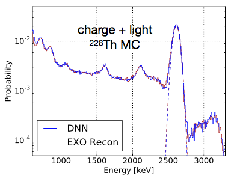
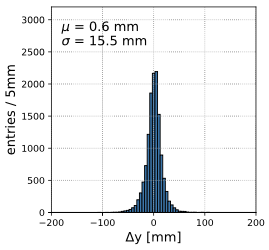

Here's the meeting week's summary and some opportunity reminders.
Meeting:
Next meeting
Let's plan on September 19th 11:30AM Fermilab/Chicago (US/Central) time.
Please ping me if you have an awesome update to share.
This week's summary
Manuel presented highlights on EXO-200 paper. It was very clear and interesting talk! Two highlights focused was using CNN for energy estimation and vertex reconstruction where they trained on data for the latter. The architecture is fairly simple: 6 convolution + max pooling layers followed by 3 fully connected layers as shown in Figure 10 in the paper. For the energy estimation, the final layer has one filter to output the reconstructed energy. For the vertex reconstruction, the architecture was modified to output vertex positions. Take aways: CNN performed slightly better than the traditional method for the energy estimation. The vertex reconstruction is trained on real data. They have two readout channels: charge and optical signals where the former is used for reconstructing vertex to 3mm resolution in 3D space. They used that (i.e. reconstructed vertex from charge signal) as a label and to train the CNN for reconstructing vertex from the optical signal. This worked and CNN could reconstruct the vertex at about 25mm resolution. Although this resolution is much bigger than the charge signal channel, it could be used in a complimentary manner for events in the kinematic regime where charge signal reconstruction may perform pooly.


Left: energy reconstruction on Thorium decay chain spectrum comparing CNN vs. traditional reconstruction techniques. Right: comparison of reconstructed vertex between CNN vs. traditional method (i.e. "true") on Y-projection. Both are from Manuel's talk on DocDB
Samantha presented her research plan for utilizing deep learning for charged-current multi-proton (CCNP) neutrino interaction analysis in MicroBooNE experiment. The detector is a liquid argon time projection chamber (LArTPC) and she gets a beautiful image of particle trajectories. Her target should contain 1 muon and any non-zero multiplicity of protons in a picture! She has worked with Rui An in the past to train a CNN for multi-class (i.e. multiple particle type) identification in one image and plan to extends that. She ultimately wish to perform instance-aware semantic segmentation technique to cluster individual particles and thus solving the multiplicity identification and clustering problem together. She is seeking for a collaboration so please contact her or us (then we can forward your contact to her!).
A MicroBooNE's event display showing CC interaction with a likely proton candidate (short tracks). Samantha would like to efficiently identify this type of an event (picture) with ab arbitrary number of protons. You can find more event displays from MicroBooNE here
Job/Conference/Funding opportunities
As usual, thanks to Gabe Perdue for sharing many opportunities! Checkout deep.learn.physics slack organization for more updates.
Get a support for conducting a research at national labs for graduate students at U.S. universities! Up to $3k stipend and travels, 3 to 12 months stay at any national lab for Ph.D thesis related research. The deadline is October 15th.
The same people organized "AI Grant" contacted me to spread this. This grant is a bit wider opportunity: no need to be AI, any ML projects (and beyond) count. "Apply with any project you need help with. After 30 days, the best players will receive $5,000, a round-trip ticket to Silicon Valley, and access to mentorship from some of the world’s most successful individuals." (from their website)